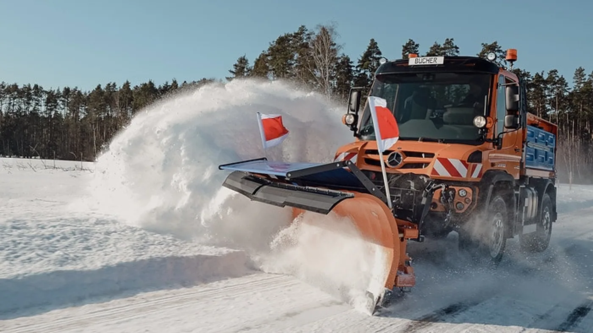

Mercedes-Benz Special Trucks anticipó el 10 de septiembre de 2026 la presencia del Unimog en GALABAU, en Nuremberg. La exposición está prevista del 15 al 18 de septiembre. Henne Nutzfahrzeuge participará junto con la marca y sus socios MULAG y Bucher Municipal.
La presentación contempla dos vehículos para distintas tareas municipales durante el año, desde mantenimiento de espacios verdes hasta servicio invernal. Las fotografías oficiales muestran equipos de corte y una configuración para despejar nieve, ejemplos de la diversidad de implementos que puede llevar un vehículo de trabajo especializado.
El anuncio corresponde a una feria alemana y no confirma nuevos contratos, entregas ni configuraciones comerciales en Argentina. Al publicarse esta nota, la exposición todavía no comenzó: las imágenes ilustran las aplicaciones anunciadas, no una cobertura de su inauguración.
Un vehículo que se evalúa por el servicio que presta
Análisis de Zabala Repuestos. En el trabajo municipal, recorrer kilómetros puede ser solo una parte de la jornada. Importa la tarea completada, el tiempo de preparación y la capacidad para volver a prestar servicio. Por eso, evaluar estos vehículos requiere conversar también sobre los equipos que utilizarán.
Una descripción útil del trabajo debería identificar zonas, temporadas y frecuencia de intervención. El mismo organismo puede tener demandas muy diferentes a lo largo del año. Ponerlas en un calendario permite discutir qué tareas comparten recursos y cuáles necesitan una respuesta específica.
Versatilidad no significa disponibilidad simultánea
Asignar varias funciones a una unidad abre una pregunta organizativa: qué ocurre cuando dos necesidades aparecen al mismo tiempo. Un vehículo no puede prestar dos servicios en lugares distintos. El análisis debería prever prioridades y alternativas, especialmente en períodos de demanda extraordinaria.
También interesa conocer el tiempo y los recursos necesarios para preparar cada aplicación. La flota puede pedir una demostración del proceso completo y registrar quién debe intervenir. Esa información ayuda a construir un cronograma realista sin suponer que cada cambio de tarea es inmediato.

El mantenimiento debe reconocer el conjunto completo
La documentación del chasis y la del implemento deberían estar disponibles para quienes organizan la atención. Una unidad especializada puede involucrar distintos proveedores. Conviene definir de antemano quién responde por cada sistema y cómo se coordina una consulta que involucra a más de uno.
Un registro de uso puede complementar el historial de recorridos con las tareas realizadas. El formato debe seguir las indicaciones de los fabricantes y las necesidades del operador. Lo importante es que el taller reciba información suficiente para interpretar la actividad de la unidad, no solo una descripción general.
Repuestos identificados antes de que llegue la urgencia
Para organizar consultas, resulta útil conservar identificaciones del vehículo y de los equipos instalados. Fotografías de placas y referencias pueden acompañar la documentación. Así se evita que el nombre del camión se utilice como único dato para pedir una pieza de un implemento diferente.
La revisión de abastecimiento también puede hacerse por temporada. El responsable necesita conocer qué consultas requieren más tiempo y qué alternativas de atención tiene disponibles. No se trata de acumular piezas sin criterio, sino de anticipar la información necesaria para sostener un servicio programado.
Capacitación ligada a cada aplicación
Conducir la unidad y operar sus equipos son responsabilidades que deben quedar claras. La preparación del personal tiene que corresponder a la configuración y a las instrucciones oficiales. Una experiencia previa con otro vehículo no reemplaza conocer los procedimientos del conjunto instalado.
También merece atención el intercambio entre turnos. Registrar una observación y comunicar lo que quedó pendiente permite que la persona siguiente reciba un estado comprensible. Esa continuidad resulta especialmente importante cuando una unidad pasa de una tarea rutinaria a un servicio prioritario.
Qué aporta esta novedad a la conversación local
Para municipios y contratistas argentinos, el anuncio permite pensar la compra como un proyecto de servicio: aplicación, personal, atención y respaldo. No implica que un equipo europeo deba copiarse sin revisar el terreno, la tarea y las condiciones locales.
La pregunta más útil es qué necesita la operación para mantener una respuesta sostenida durante el año. Un vehículo especializado aporta valor cuando su equipamiento y su organización de trabajo se corresponden. Esa evaluación, más que una fotografía de exposición, es la que permite entender si una propuesta completa responde a la necesidad del usuario.